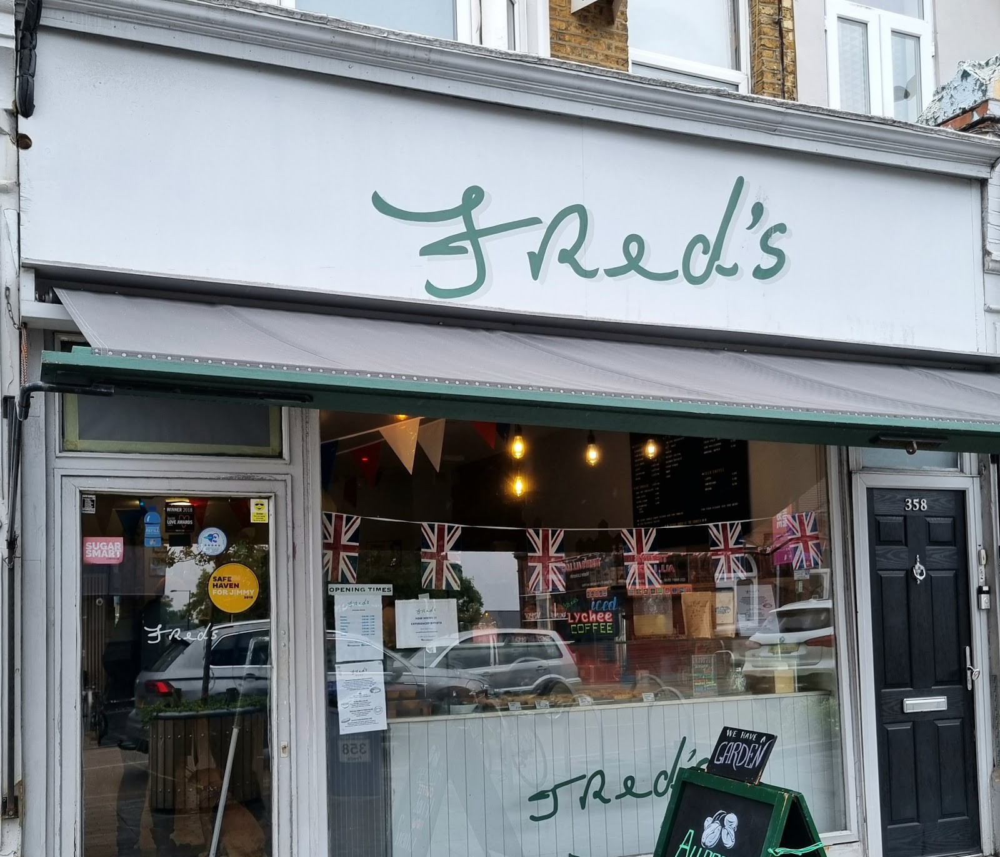
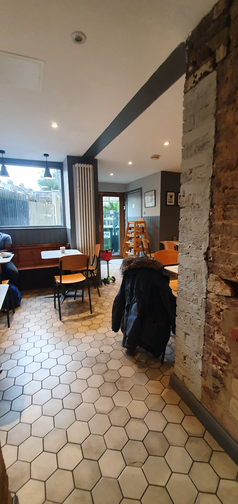
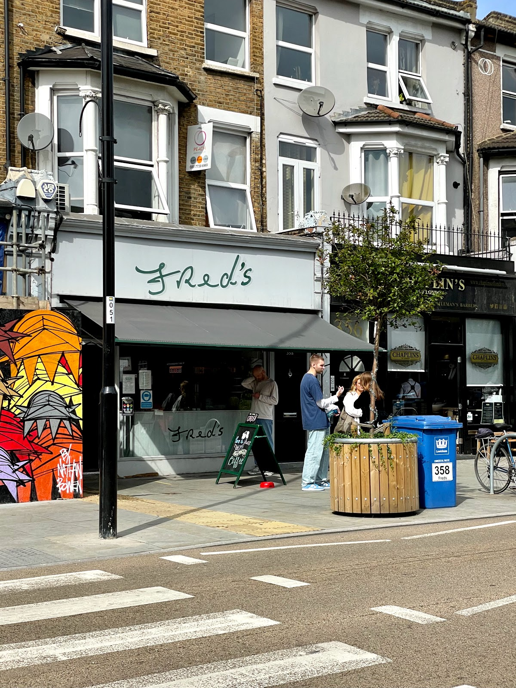

Neighbours
A family-friendly hub for SE4 locals, laptop workers, buggies and station dashers alike.

Fred's
Named after Gregg's father, Fred. Allpress coffee, homemade bakes and a suntrap garden opposite the station.
Community first
A family-friendly hub for SE4 locals, laptop workers, buggies and station dashers alike.
Brunches, workshops and catch-ups. Message us if you want to host something at Fred's.
Our suntrap patio out back is where community slows down over cake and conversation.
About Fred's

Fred's sits at 358 Brockley Road opposite the station. Founders Gregg Boxall and Alain Haddad built a place for Allpress coffee, Swedish flatbreads, vegan bakes, free Wi-Fi and the garden suntrap.
Meet the crewPeople
The people behind Fred's, from founders to the baristas neighbours love.
Gallery
A look at Fred's coffee, cakes, garden and Brockley Road home.
Google Maps · Yelp
Loved locally for coffee, cakes, friendly staff and the garden.
Community
Garden brunches, family mornings and gatherings at Fred's.
Find us
358 Brockley Road
Crofton Park
London SE4 2BY
Opposite Crofton Park station. Grab-and-go for the train, or a slow sit in the garden.
| Monday to Friday | 8:00 to 16:00 |
| Saturday to Sunday | 8:30 to 16:00 |
